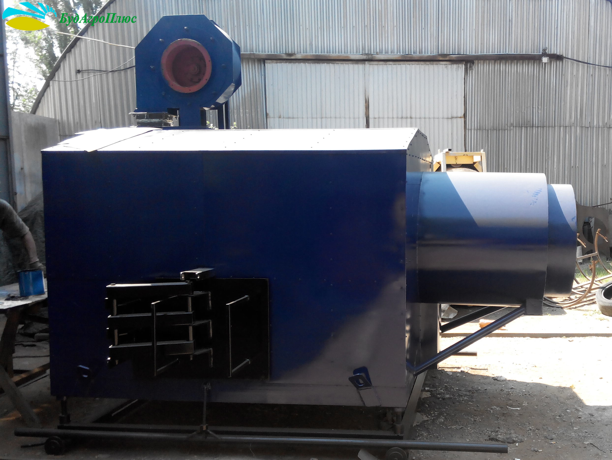
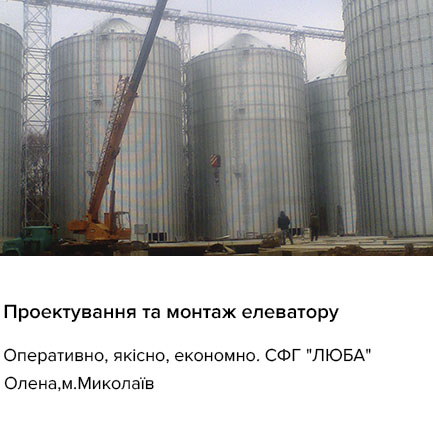
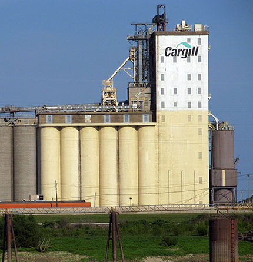
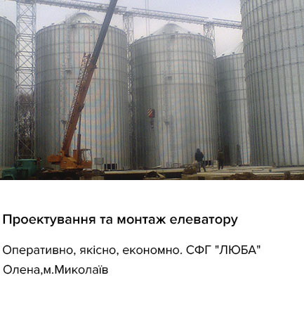
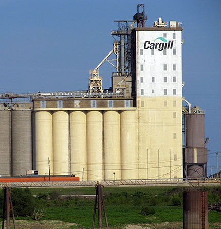

Ремонт, монтаж, будівництво та обслуговування підприємств АПК України та країн СНД
246
ВИКОНАНИХ
ПРОЕКТІВ
ПРОЕКТІВ
50
ВИРОБНИКІВ
ОБЛАДНАННЯ
ОБЛАДНАННЯ
23
РОКИ НА РИНКУ
БУДІВНИЦТВА
БУДІВНИЦТВА
до 3
РОКІВ ТЕХНІЧНА
ПІДТРИМКА ТА ГАРАНТІЯ
ПІДТРИМКА ТА ГАРАНТІЯ


Замовити консультацію по послугам та продукії
Продукція
- Теплогенератор біопаливний ГТУ
- Сушарка зернова шахта
- Повітряний теплообмінник ТВ

Наші кліенти


Про компанію
Більше десяти років співробітники нашого підприємства «Будагроплюс» працюють в галузі агропромислового комплексу України.
Наша спеціалізація - проектування і будівництво "під ключ" комплексів ЗАВ, КЗС, елеваторів (зерносховищ), а так само установка, ремонт і обслуговування зерноочисної техніки і багато іншого.
Відгуки
 
